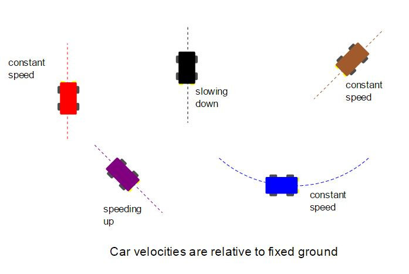

edX
WitsX Introduction to Physics
Concept Problems
Problem 5: In Which Frames Does F=ma Hold?
Several cars are driving in a parking lot with various motions. An observer in each car measures the acceleration of objects. In which cars is acceleration related to force via F = ma? Select all such cars
red car
blue car
purple car
brown car
black car
blue car
purple car
brown car
black car
Answer: red car, brown car
Explanation: The equality F = ma holds only for observers in inertial reference frames, meaning that the observer is not accelerating. An accelerating observer will perceive a system as experiencing forces that are not present in the system, but are instead evidence of their own acceleration. Thus, when the observer measures the net acceleration of an object and the net force acting on it, the two quantities will not be equal.